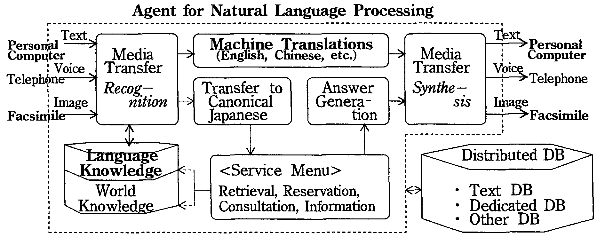
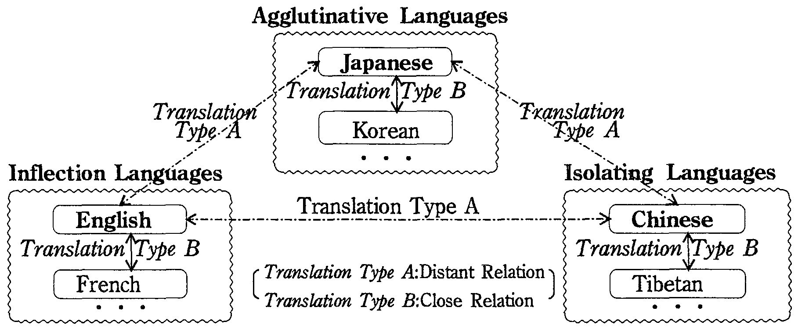
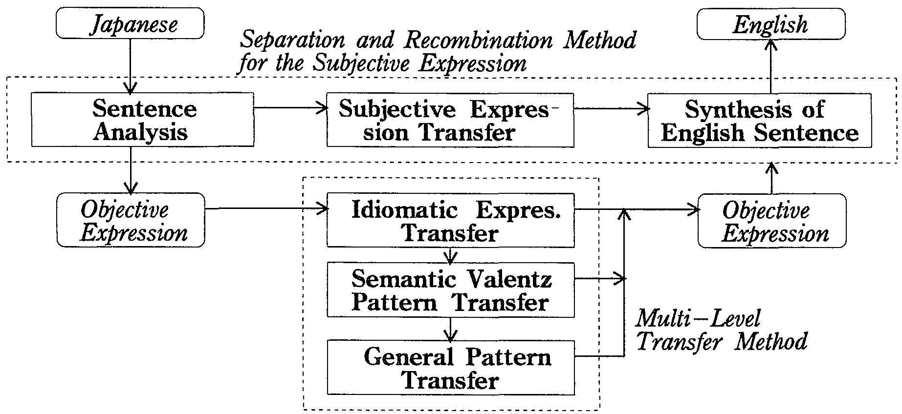
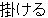

Machine translation services to facilitate social interaction are strongIy needed. This paper discusses forms of communication with machine translation services and the required translation quality. The Multi-Level Machine Transintion method based on semantic analysis is proposed to realize the required translation quality.
Test experiments to date indicate that conventional machine translation systems, which place emphasis on syntax developed from compositional semantics, are limited to a translation success rate of about 30% for Japanese to English machine translation. The proposed method achieves a success rate of up to 80%. This level of translation quality is sufficient to make many new communication services feasible such as E-mail with translation.
Natural Language Proccesing; SPECIAL-PURPOSE AND APPLICATION BASED SYSTEMS; COMPUTERS IN OTHER SYSTEMS
Progress in the field of telecomnlunications technology has overcome the communication barriers of distance and time facing mankind. The major remaining problem is the language barrier. To support the ever-increasing volume of international communications, the realization of communications with machine translations servtces (CWMT services)[1] has become the major issue. CWMT services transcend the conventional scope of communication services which are limited to the transfer of signals. CWMT deals with the contents of a message and constitutes a new value added communication service.
Since the 1980s, research related to machine translation (MT) has rapidly progressed and the development of various systems[2,3] has been undertaken. Yet good quality MT between languages that are as far apart as Japanese and English is still unrealized. Many actual MT systems require manual processes such as rewording the origInal text into a form more readily translatable (pre-editing) and/or rewriting the translation results (postediting). Applications of such systems have been limited to manuals and other forms involving expressions that are comparatively easy to handle. Thus, conventional MT systems fail to realize the CWMT services that can accessed easily by the general public. Realization of a MT system capable of high qualify translation and requiring no pre-editing nor postediting has long been awaited.
This paper discusses forms of CWMT services and the qualify of translation required for them. In order to realize MT system required for CMMT services, we propose a Multi-Level Translation Method (MLTM method) which is based on a new semantic analysis. Applying this method to the Japanese-English machine translation system ALT-J/E, the improvements in translation qualify is tested to confirm that CWMT services are feasible.
Let's consider the agent for natural language processing shown in Fig.1. Several of these are located at nodes in a communication network to offer CWMT services.
|
 |
Depending on the media used, CWMT services can be classified into three types: character communication, voice communication and static image communication. The last two types depend on the technologies of recognition and synthesis. Synthesis technologies for voice and characters are already being used. Therefore, progress in recognition technologies is one of the key factors in realizing comprehensive CWMT services.
When performing MT on texts, the type of source texts should be taken into account. Translation qualify depends on the text type such as colloquial style and literary style and also the types of documents such as letters, manuals, theses, and newspapers. Here we limit the source texts to the literary style and examine the following three types of communication services which are expected to be popular in the near future.
| (1) | Network Translation Servicescommunicate asynchronously via messages | |
| (2) | Facsimile Translation Servicescommunicate through ISDN networks. | |
| (3) | Information Retrieval Translation Services |
We cannot expect that general users be conversant with details of their partner's language or details of the MT system used. When the services above mentioned are provided as public services, the MT system must produce translation results that can be understood easily without manually pre-editing the source texts or manually postediting the translations.
Evaluating trarlslation qualify is the aim of the zero to ten evaluation method[4]. In this method, a score of six or more points indicates successful translation in that the original meaning could be correctly understood. Experiments were conducted using this method to find the relation between the grade of text understanding and translation qualify for each sentence in a text. We found that when the translation score of at least 70% of the sentences was 6 or more, the text could be understood in general. These results indicate that CWMT services must achieve a translation success rate of 70% to be successful. The success rate of conventional Japanese to English MT systems is about 30 % for newspaper translations. Thus, more than twice the current translation quality is required,
The difficulty of MT depends on the relation between the source and target languages. Translating greatly different languages such as Japanese and English is much harder than translating similar languages such as Japanese and Korean. The interlingua translation method[5] uses an artificial intermediate language. However, no successful interlingua system has been introduced for widely different languages. Natural language reflects mental processes in the act of communication.
We propose a new multi-lingual translation method based on the use of representative languages. The method is shown in Fig.2. In this method, translation is conducted as follows. First, languages close to each other are collected into discrete language groups. This paper introduces three language groups: the agglutinative language group, the inflection language group and the isolating language group. Next, a representative language is selected for each group. There are two types of translations. Conventional translation technology appears suitable only for type B translation,
|
 |
Starting with the Constructive Process Theory[6] for natural languages, we propose the Multi-Level Translation Method (MLMT method) shown in Fig.3. The method uses semantic analysis and is mainly featured by the following two points.
|
 |
(1) Separation of Expressions
Expressions in the source text are separated into two types. Subjective expressions express the speaker's emotions and intentions directly. Objective expressions express the conceptualized object world. Subjective expressions are translated into the target language using reference tables,
(2) Abstraction of Patterns
Objective expressions are translated into the target language through transfer rules. Transfer rules are prepared in advance so as to abstracting patterns swithout changing their meanings. Pattern abstraction is performed in accordance with the strength of the structure and abstracted patterns are classified into dictionaries that reflect dinering degrees of abstraction.
The Japanese to English MT System, ALT-J/E[7], was developed to evaluate the effects of the proposed method. Within this system the linguistic knowledge systems were developed.
(1) Description Language for Dictionaries
In order to describe syntactic and semantic usage of words, a syntactic attribute system (500 attributes) and a semantic attribute system (3,000 attributes) were developed. The semantic attribute system is comprised of three subsystems: the common noun semantic attribute system (2,800 nodes), the proper noun semantic attribute system (200 nodes), and the verbal semantic attribute system (100 nodes). Semantic features of words are defined by sets of attribute names and their values. Semantic features of words are defined by attribute names.
(2) Syntactic and Semantic Dictionaries
Linguistic knowledge needed for Japanese to English MT is compiled in syntactic word dictionaries and semantic word dictionaries. The semantic dictionaries are composed of a semantic word dictionary (400,000 words) and a semantic structure dictionary (15,000 patterns). Abstracted Japanese sentence patterns are written using a semantic attribute system and registered in the laner dictionary with corresponding English sentence patterns.
Language processing rules were also written by using me abovementioned syntactic and semantic attribute systems. The rules were applied to translations in cooperation with the linguistic knowledge described by the same attributes, This framework makes it easy to develop various new translation functions. Some of them are shown in the following.
(1) Differentiating Translations for Verbs
One Japanese verb usually corresponds to more than one expression in English. For example, the Japanese verb "

(kakeru) " can be translated in more than 80 ways, some of them are shown in Fig.4. Experiments showed that 2,000 more classes of semantic attributes are needed if we are to successfully differentiate the translation of Japanese verbs. This problem has been solved by the 3,000 semantic attribute system used in ALT-J/E.
|
(2) Supplementation of Elements Ellipsis
Japanese writers refrain from writing what readers are assumed to understand. Specifically, subjects and objects are usually omitted. Successful translation, therefore, demands that these elements he recovered from the context. Our experiments[8] into translating newspaper articles by ALT-J/E showed that 95% of subject and object ellipsis could be correctly supplemented automatically.
(3) Automatic Rewriting of Source Text
Although the automation of preediting has been desired for a long time, it was difficult because of undesirable side effects. With ALT-J/E, it is possible to judge whether a expression can be rewritten or not without changing the meaning using the automatic rewriting rules developed by the semantic attribute system. Experiments[9] showed that if the original success rate is about 50 %, the improvement in translation success rate is about 20 % with automatic rewriting performed by ALT-J/E,
Experiments performed to translate newspaper articles found that originally omitted translation rules can easily be added without causing conflict among the rules in the system such that the success rate of translations can be improved up to 80%. The 20% of translations that failed are difficult even for the technology of semantic analysis and require meaning understanding technologies based on world knowledge.
The success rate obtained in this experiment (80%) is more than the twice of that of the conventional method (30%). Therefore, it can be said that we are now able to realize CWMT services, some types of which were mentioned in section 2.2.
Based on a discussion about the types of communications with translation (CWT) services, the requirements for translation qualify and the problems of conventional machine translation (MT) systems were clarified. To solve the problems inherent in conventional MT, the Multi-Level Machine Translation Method (MLMT method) based on semantic analysis was proposed and applied to the Japanese to English MT system, ALT-J/E. According to experimental translation results, the proposed method significantly increases translation performance.
The results can be summarized as follows. Conventional MT methods, which emphasize syntax based on compositional semantics, achieve a translation success rate of about 30% in the case of Japanese to English MT. The proposed method achieves a success rate of about 80%. This rate exceeds the translation quality (70%) required to begin CWMT services such as mail translation, facsimile translation and information retrieval with translation.